Notes merger
To merge nearby notes into one DryWetMIDI provides NotesMerger class. Example of usage:
var notes = midiFile.GetNotes().Where(n => n.NoteName == NoteName.CSharp);
var tempoMap = midiFile.GetTempoMap();
var notesMerger = new NotesMerger();
var mergedNotes = notesMerger.Merge(
notes,
tempoMap,
new NotesMergingSettings
{
Tolerance = new MetricTimeSpan(0, 0, 1)
});
Note that notes obtained via GetNotes are detached from the file so if you call GetNotes on the file again, you will get original unmerged notes. To update notes in the file or specific track chunk you should use NotesManager.
Also there are useful methods inside NotesMergerUtilities class that allows quickly merge nearby notes inside TrackChunk or MidiFile without messing with updating notes via NotesManager. Example above can be rewritten to the following code:
midiFile.MergeNotes(new NotesMergingSettings
{
Tolerance = new MetricTimeSpan(0, 0, 1)
},
n => n.NoteName == NoteName.CSharp);
Process of merging can be adjusted via NotesMergingSettings which contains important property (along with other ones) - Tolerance. Tolerance is maximum distance between two notes to consider them as nearby. The default value is time span of zero length, so two notes should have no gap between them to me merged. The image below shows how tolerance (T) affects merging:
